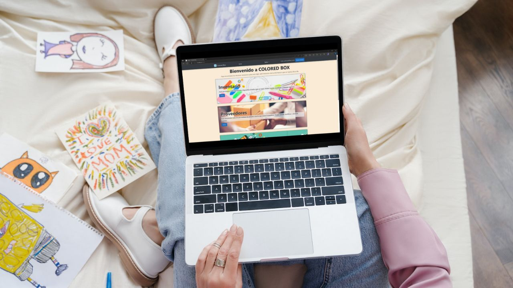

Mis proyectos recientes
Estos son algunos proyectos que he creado recientemente...


Soy estudiante de una Ingenieria en Tecnologias de Software dentro de la Facultad de Ingeniería Mecánica y Eléctrica. Me considero una persona a la que le apasiona programar y desarrollar software, mi amor por la tecnología y la informática me impulsó a entrar en este campo fascinante. Tengo conocimientos en lenguajes de programación como Java, Python, C#, JavaScript y HTML, y siempre estoy dispuesta a aprender nuevas tecnologías. Me gusta leer novelas de ciencia ficcion porque asi puedo imaginar mundos diferentes, mi banda favorita es 5SOS y estoy obsesionada con la serie 'The Office'.
Desarrollo Web
Construyo sitios web resposivos y modernos con diferentes tecnologias que me han permitido avanzar a nivel profesional.
Certificados
He tomado distintos cursos con el fin de aprender algo nuevo o reforzar conocimientos para desenvolverme mejor como profesionista.
Estudiante
Mi carrera se enfoca en el auto-aprendizaje de las nuevas tecnologias y en prácticar habilidades para solucionar problemas.

Karely ha desarrollado de manera eficiente sus habilidades en programación front-end, demostró ser una gran estudiante y bastante colaborativa con sus compañeras.
Nancy Salazar
Instructora Front-End en Tecnolochicas PRO.
Trabaje con Karely durante un año, jamas conoci una estudiante tan apasionada por lo que hace, me sorprendió su liderazgo y su ganas de aprender.
Denisse Janeth Rivas
Compañera de la Facultad de Ingeniería Mecánica y Eléctrica

Karely ha demostrado mucha iniciativa y y entusiasmo por el área. Es buena trabajando en equipo y mostró mucho progreso durante el curso. Sus habilidades en HTML, y CSS son excelentes y es una gran programadora.
Eliane Axelle Hernandez
Compañera del Bootcamp Tecnolochicas PRO

He colaborado con Karely durante el bootcamp de Tecnolochicas Pro 2023 y me impresiona mucho su proactividad y entusiasmo por aprender nuevas tecnologías.
Marisol Hernández Gómez
Ingeniera de Software / SCRUM Master Fundamentals Certified